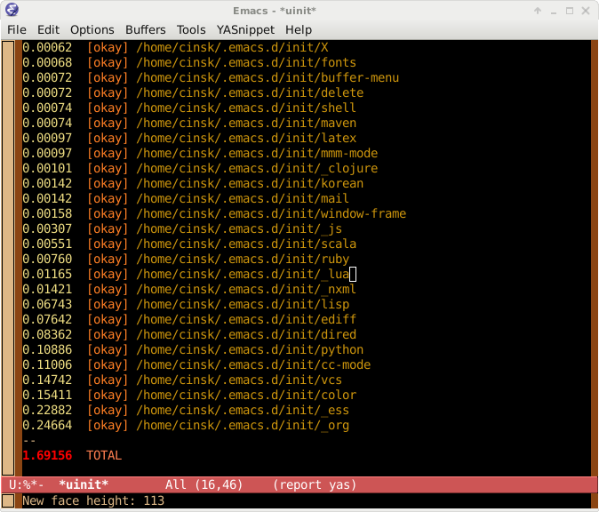

How I measured Emacs init script performance
Background
How did I load lots of init scripts?
If you're like me, you have a lot of elisp files for your Emacs
configuration. Without considering unmaintained code or junk codes, I
have almost 80 elisp files in my $HOME/.emacs.d/.
This causes Emacs launching slower and slower. Normally, I don't turn-off
my computer, nor I need to launch Emacs frequently. So it was not big deal.
However, sometimes it took more than 7 seconds to launch Emacs on my idle Gentoo machine. Why it took so much time before starting? Which file is the time-consuming monster? Unfortunately, I couldn't answer.
So I tried to clean-up my configurations. First, I remove all unused
junk from my $HOME/.emacs.d/init.el. Even after that, my init file
was too big to maintain easily. So I modulize the init file into
separate code pieces. Now, there is just a small init.el, and lots of
code pieces reside in $HOME/.emacs.d/init/. For example, my
customization for dired package is stored in
$HOME/.emacs.d/init/dired.el, and Korean language customization is
stored in $HOME/.emacs.d/init/dired.el, and so on.
After that, I wrote simple macro, which loads the init code pieces from the
specified directory, $HOME/.emacs.d/init/, if it was not loaded
before, much like Emacs's require function.
(uinit/load "korean" enable-multibyte-characters)
You can interpret above code as "If enable-multibyte-characters is
not nil, load $HOME/.emacs.d/init/korean.el, if it was not loaded
before."
In detail, uinit/load function will search whether the given code piece
(e.g. Korean.el in above) is loaded before, by searching the list
uinit/loaded-init-files. Then if it does not exists, it call call
load function to load the file. It also record the duration time of
loading the piece, and save it in to the report buffer, "*uinit*".
After my init.el is loaded by Emacs, it will repeatedly call
uinit/load to load lots of init code pieces, saving the timing of loading
in "*uinit*" buffer. In the end of init.el file, I call
uinit/summarize so that it will sort *uinit* buffer by the
consumed time, and wrote the total amount of time to load my init
code pieces. Here's the screenshot of *uinit* buffer:

Usage
You can grab the source of uinit package from here.
Your emacs init script ($HOME/.emacs or $HOME/.emacs.d/init.el)
modifies load-path, You must set load-path before using any of
function in uinit because uinit will try to byte compile your init
pieces on load. Otherwise byte compilation will fail. Especially,
if you're using package, try to call (package-initialize) before
loading uinit. For example:
(when (locate-library "package")
(require 'package)
(package-initialize))
(setq uinit/init-directory "~/.emacs.d/init")
(require 'uinit)
Then, you're free to call uinit/load to load your init code pieces.
(Your init code pieces should be placed in uinit/init-directory.)
For example:
(uinit/load "darwin" (eq system-type 'darwin))
(uinit/load "X" (eq window-system 'x))
Finally, add following code in the end of your init.
(uinit/summarize)
댓글
Comments powered by Disqus